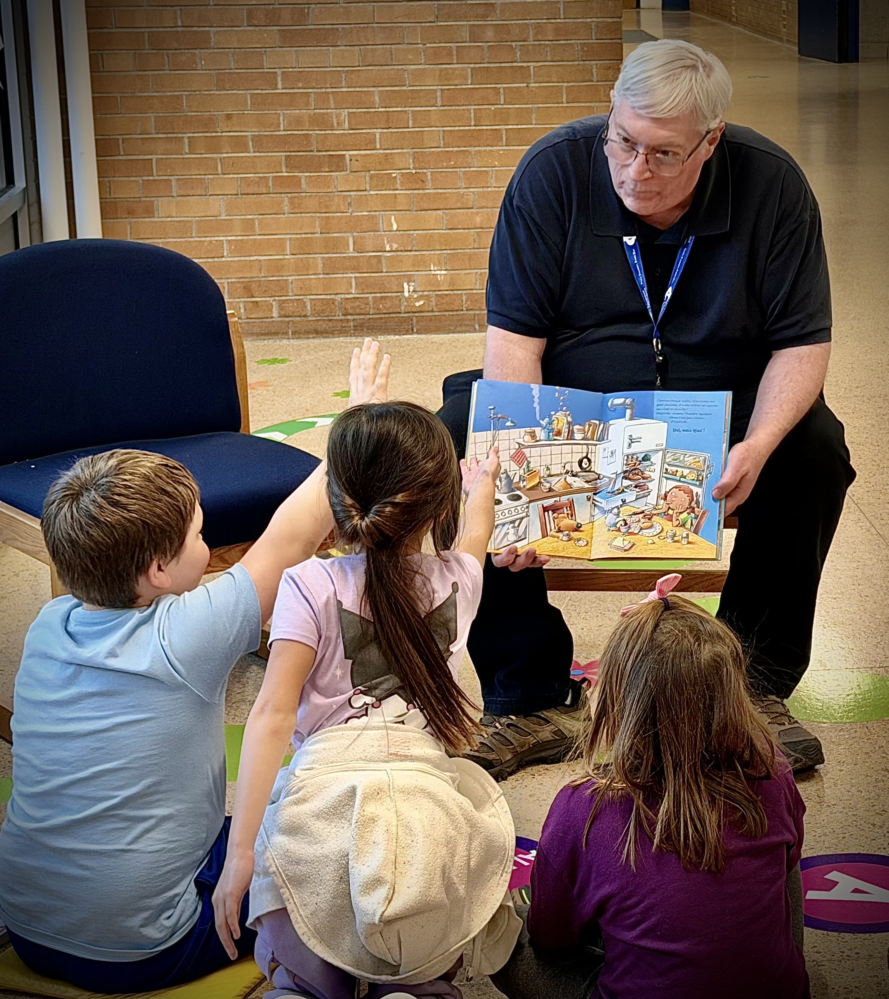
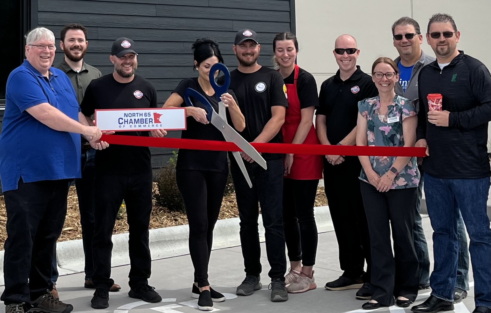
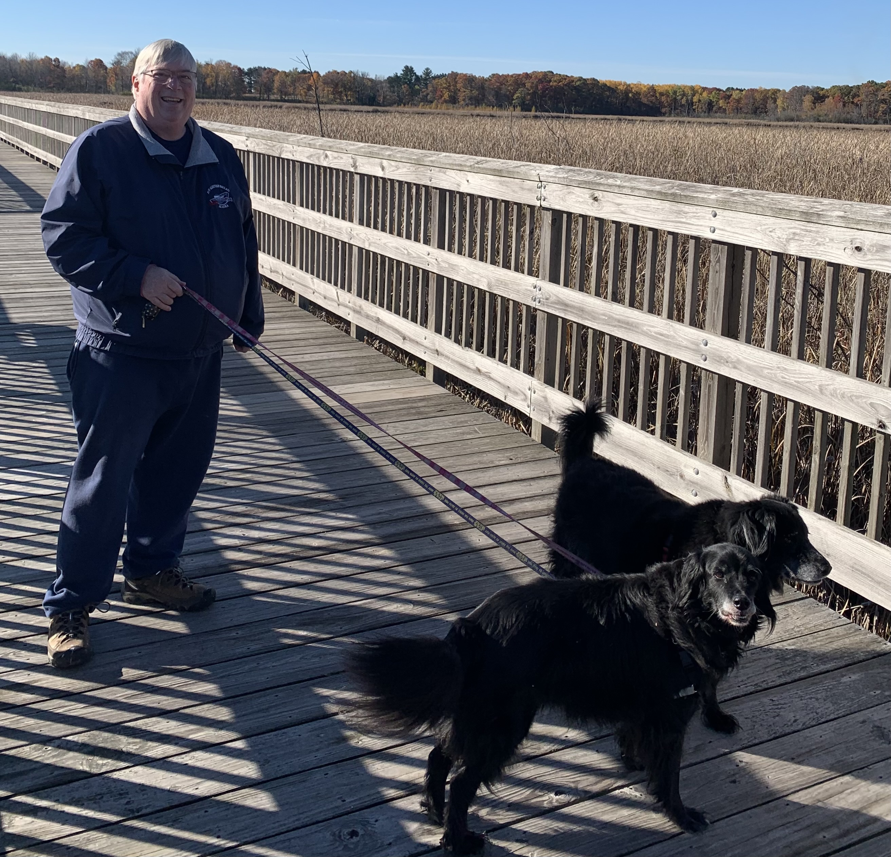

Jim, Jack the therapy K9, and Officer Gross hosting Winterfest 2026

Jim reading to primary students at the CPS book exchange

Welcoming new businesses to Cambridge

Preserving the Cambridge Isanti bike walk trail
Welcoming visitors to Winterfest 2025